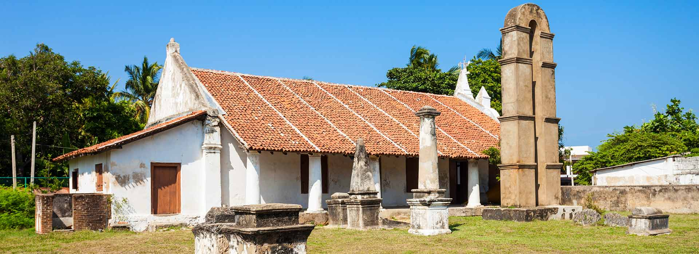

A historic Dutch-era Protestant church in Kalpitiya, reflecting the island's rich colonial past and architectural beauty.
The Dutch Church in Kalpitiya, also known as the Kalpitiya Dutch Reformed Church, dates back to the Dutch colonial period in Sri Lanka. Built during the 17th-18th century, the church stands as a reminder of the influence of the Dutch East India Company in the coastal regions of the island.
The architecture of the church is simple yet elegant, featuring thick coral stone walls, high ceilings, and traditional Dutch design elements. Although it is no longer used regularly for worship, the structure remains an important historical monument and attracts visitors interested in colonial history.
Located near the Kalpitiya Fort, the church forms part of a larger heritage site, offering travelers a glimpse into the past while enjoying the peaceful coastal surroundings of the peninsula.
Back to Kalpitiya Hub